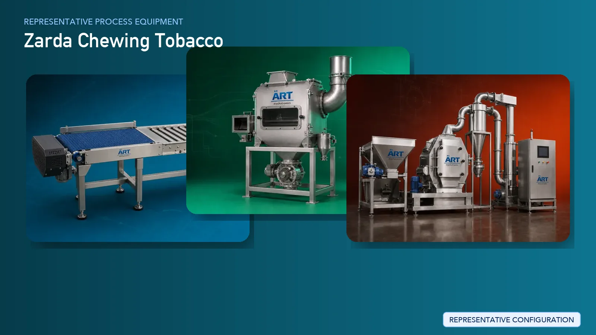

Zarda (Flavoured Chewing Tobacco) Processing Plant & Machinery Solutions
Zarda is a flavored chewing tobacco product widely used alongside pan masala and mouth fresheners. The manufacturing process involves tobacco preparation, controlled flavor infusion, moisture balancing, and uniform blending to achieve consistent taste, aroma, and texture.

About Zarda Chewing Tobacco processing
ART Mechatronics provides complete turnkey solutions for zarda manufacturing plants, offering advanced systems for tobacco processing, flavoring, blending, drying, and high-speed packaging. Our solutions are designed for consistent product quality, efficient production, and large-scale commercial operations.
Complete Zarda Process Flow
Tobacco leaves or processed tobacco are received and transferred into the processing line.
Ensures smooth and continuous flow.
Tobacco is cleaned to remove impurities such as dust, sand, and foreign particles.
Ensures product purity and protects machinery.
Tobacco is conditioned to achieve optimal moisture levels required for processing.
Prevents brittleness and ensures proper texture.
Tobacco is cut into suitable sizes depending on product requirement.
Ensures uniform particle size.
Flavoring agents, sweeteners, and aromatic compounds are prepared separately.
Processed tobacco is blended with flavors and additives to create zarda.
Ensures:
- Uniform flavor distribution
- Consistent texture
- Enhanced aroma
The blended product is dried or conditioned to stabilize moisture and improve shelf life.
Fine tobacco dust generated during mixing and handling is controlled. Systems Used:
Ensures:
- Clean working environment
- Product recovery
- Compliance with safety standards
Final screening ensures consistent product quality and removes fines.
Finished product is packed into pouches using automated packaging systems.
Suitable for high-speed FMCG production.
Pouches are packed into mono cartons for distribution.
Machinery Required for Zarda Processing Plant
- Material Handling Systems
- Pre Cleaner
- Air Classifier
- Cyclone Separator
- Conditioning System
- Tobacco Cutting Machine
- Flavor Mixing System
- Ribbon Blender / Paddle Mixer
- Coating Drum / Spray System
- Dryer
- Vibro Sifter
- Dust Collection System
- High-Speed Packaging Machines
- Cartoning Machines
Turnkey Zarda Plant Solutions
ART Mechatronics provides complete turnkey solutions for zarda manufacturing plants, including:
- Process design & plant layout
- Tobacco preparation and flavoring systems
- Dust control & air handling systems
- High-speed packaging integration
- Automation & control panels
- Installation & commissioning
- After-sales support
We customize solutions based on:
- Product formulation
- Production capacity
- Packaging speed requirements
- Plant layout constraints
Why Choose Art Mechatronics
- Extensive experience in chewing tobacco and pan masala machinery
- Expertise in flavor mixing and coating systems
- Advanced dust control solutions
- High-speed packaging integration capability
- Heavy-duty industrial machinery design
- Global export capability
Machinery in a Zarda Chewing Tobacco plant
Where it's used
Get pricing & specs for the Zarda Chewing Tobacco plant
Share the product, target capacity, current process and plant location. These details help our engineers discuss the right machine or line configuration.
One partner, from design to start-up
ART Mechatronics designs, manufactures, installs and commissions your Zarda Chewing Tobacco solution with regional presence in India, UAE and Thailand.